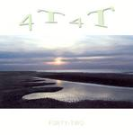

| Artist: | Forty-Forty |
| Title: | Forty-Two |
| Label: | self produced |
| Length(s): | 53 minutes |
| Year(s) of release: | 2003 |
| Month of review: | [05/2004] |
| 1) | Synthesis | 6.03 |
| 2) | Cycles | 5.27 |
| 3) | Trinity | 5.27 |
| 4) | Windows Forty-Two | 5.58 |
| 5) | Fading Away | 4.58 |
| 6) | Rainbow | 4.32 |
| 7) | Opening Doors | 5.27 |
| 8) | Pianoman Strikes Again | 4.46 |
| 9) | Happy Hour | 5.27 |
| 10) | Free | 4.39 |
Cycles is more up-beat, more driven. The guitar takes the fore here, more so than the keyboards. Plenty of tempo changes, but the drums seem to be programmed (or if they do have a drummer, he should be a bit less careful). 'Stroef' is a word that comes to mind in this song, for want of an English word. The mood can be rather menacing here, and then I like the music a bit more. For the remainder it is all a bit too light, a bit faceless.
Trinity moves in the direction of New Age, very friendly, a bit in the vein of Kitaro. They seem more at home here, and the drive which I expect in rock, need not be here, so it won't be missed. However, this only holds for the first few minutes, because then the symphonic rock does come in again. However, the drive is there and this is certainly the most likable track so far. The melodies are also more memorable. The flute brings in the obvious Camel reference. The team seems to put more spirit into their music, right here. It continues to have a whiff of sterility, but it is a large improvement on the first two songs.
Windows Forty-Two might or might not be a tribute to a non-existent Microsoft product. Maybe the opening theme will once be used as the intro tune for the operating system. It is melodic enough for it. The guitar often reminds me of Odyssice, although the fire burns a bit stronger in Odyssice, it seems to me.
Fading Away opens with pumping organ sounds, but in a subdued fashion. The music is tuneful and on the sunny side. Some of the synth playing sounds brassy, but also a bit thin. The bass plays a strong role here, more like a melodic instrument, intertwining as it does with the acoustic guitar. On the other hand, we also have some plodding guitars grinding along. Then we move into a part with a friendly and likable melody, in which the Spanish guitar comes back. Lovely is the word here. The drums could be a bit more varied and daring, more decisive too. The organ comes back in, but lacking in fluency. The final part is mid-tempo, easy going stuff.
Past halfway we come to the jolly Rainbow. The melody reminds me of something, oh well, maybe a previous listening session with this album. This is the only vocal track, somewhat ethereal. The jolly part, reminiscent of Caravan, is striking and a bit like a marching tune.
With Opening Doors, organ and bass combine for something like an improv. However, it lacks in flair and power. Then we come to a dreamy, melodic part in which the flute and acoustic play a role. This is the kind of material one often hears on Musea releases, easy-going and melodic. At times the musicans get an itch that needs to be scratced, but the result can be cheesy at times, and fragmentary too. A weak track.
Pianoman Strikes Again opens with some nice piano, percussive and darkish, occassionally interrupted by lighter tones. Anthony Phillips and Harry Williamson come to mind (e.g., Tarka).
On Happy Hour, the tunes are supported by guitar work. Too bad those organs do not sound any fuller. The pushy keyboards sound a bit louder. Free is the closer. The drums have a tendency to make you think it is rock, but it doesn't rock. Why not make an eletronic tune of it instead and do away with the drumkit and bring in the sequencer (or something)?